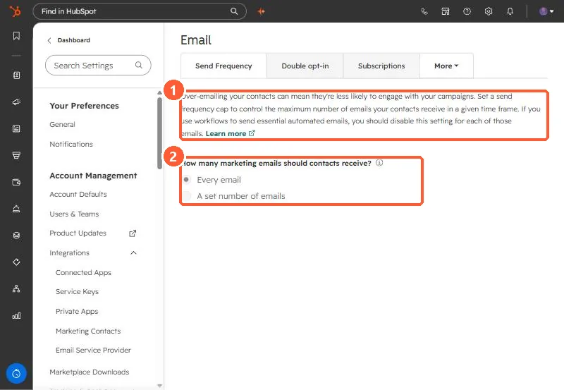

Short answer
On the Send Frequency tab, choose Every email or A set number of emails, then a maximum per contact per day, week, two weeks, or month. HubSpot says the cap applies to regular marketing emails, workflow emails, and blog notifications, but not to transactional, one-to-one, feedback survey, or inbox emails. Exempt a specific email by clearing its frequency cap checkbox. It needs Marketing Hub Enterprise. My demo sends every email.
1. The Send Frequency tab
Open Send Frequency.


The page warns that if you use workflows for essential automated emails, you should turn the cap off for each of those emails.
2. What counts
- Included: regular marketing emails, workflow emails, blog notification emails.
- Not included: transactional, one-to-one, feedback survey, and conversations inbox emails.
- To see who was skipped, open a sent email's Recipients tab, Not sent, and filter by Reached frequency cap.
3. Exempting an email
In the email editor's send options, clear Apply send frequency cap for this send. Use it for renewals, policy changes, and announcements everyone must get. Separate caps per brand need the Brands add-on.